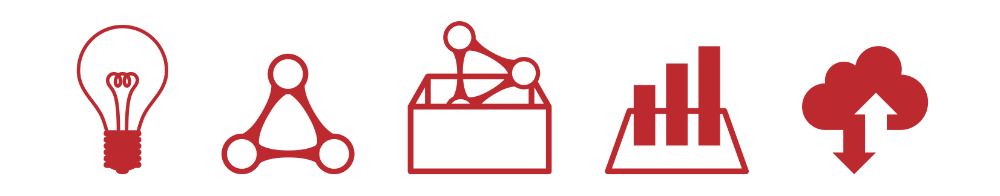

LODチャレンジ2017 作品募集要項
１．エントリー部門

LODチャレンジ2017では以下の5つの部門で作品を募集します。
- アイディア部門
- ・LODを利用したアプリケーションやサービスのアイディア
- データセット部門
- ・新規に作成したデータ
- ・既存のデータを加工したデータ
- アプリケーション部門
- ・データを利用したアプリケーションやサービス
- ビジュアライゼーション部門
- ・データを可視化した作品
- ・データの価値やデータの面白さを表現する作品
- 基盤技術部門
- ・データを利用するための基盤的なツールやフレームワーク
２．応募期間
2017年10月1日（日） 〜 2018年1月14日（日）
３．応募規定
各作品は、次の「応募規定」にご同意の上ご応募ください。
（ご応募頂いた時点で本規約にご同意頂いたものとみなします）
→LODチャレンジ2017応募規定
４．応募方法
下記ページに記載の手順に従いご応募ください。
→LODチャレンジ2017エントリー手順
応募方法の不明点等はLODチャレンジ2017事務局までメールでお問い合わせください。
LODチャレンジ2017事務局：lod@linkdata.org
５．表彰予定賞
下記ページからご覧頂けます。
→LODチャレンジ2017表彰予定賞
６．審査基準
下記ページにて公開しております。
→LODチャレンジ2017審査基準
７．審査結果発表
応募作品の審査はLinked Open Data チャレンジ Japan 2017 審査委員会で行います。
審査結果は2018年3月に開催される「LODチャレンジJapan2017授賞式」にて発表予定です。
８．作品応募のヒント
LODチャレンジ2017では、各部門の応募作品や、国内外で公開されているデータセット・アプリケーションがつながり、新しい価値を創造するような作品を募集しています。
例えば以下のような作品の応募を推奨しています。
- 国内外のオープンデータを活用したアイディア部門の作品を応募する
- データセット部門で応募されたデータセットを活用するアイディアをアイディア部門へ応募する
- データセット部門で応募された作品をビジュアライズした作品を応募する
- アイディア部門で応募されたアイディアを実現するアプリケーションを開発してアプリケーション部門に応募する
- アプリケーション部門で応募された作品をより魅力的にするためのアイディアやデータセット、ビジュアライゼーション作品を応募する
- 基盤技術部門に応募された作品を活用した作品をアプリケーション部門やビジュアライゼーション部門へ応募する
また、より多くのつながる機会をご提供することを目的として、LODチャレンジ2017開催期間中に講演会・勉強会・スポンサー様との共催イベント等の開催を予定しております。
詳細は本サイトにおいて順次公開してまいります。